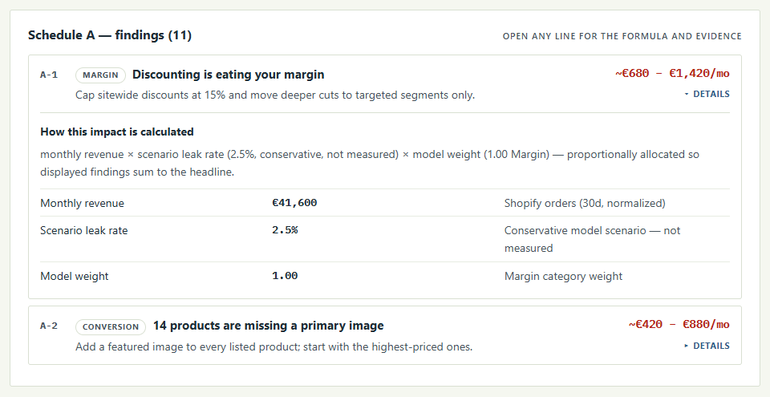

Blog · Guide
The 12 most common profit leaks in a Shopify store (and how to check yours)
Most Shopify stores don't lose money in one dramatic place. They lose it in a dozen small ones: a discount that is a little too deep, a return policy nobody can find, a free shipping threshold that sits right where most orders already land. None of these show up as a red line on your sales dashboard. Revenue looks fine. Profit quietly doesn't.
We built Auditink to find these leaks automatically, and the same twelve come up again and again. This guide walks through each one: what it is, why it costs you money, how to check your own store by hand, and what to do about it. You don't need any app to use it. A spreadsheet, your Shopify admin and an honest hour will do.
First, what counts as a profit leak?
A profit leak is money your store loses without deciding to. It comes in two kinds:
- Margin leaks eat into the profit on orders you already win: discounts, markdowns, shipping and ad costs.
- Conversion and return leaks cost you the orders you almost won, or take back the ones you did: shoppers who hesitate and leave, and buyers who send things back.
The first six leaks below are about margin and returns. The last six are about the product page, where most buying decisions are made.
01 Discounts deeper than your margin allows
A 20% discount sounds modest. But if your gross margin is 50%, that discount doesn't take 20% of your profit. It takes 40% of it. On a $60 order with $30 of gross profit, 20% off leaves you $18. Run that sitewide for a month and it adds up fast.
How to check
In Shopify, go to Analytics and pull your total discounts and gross sales for the last 30 days. Divide discounts by gross sales to get your average discount. Then compare it with your gross margin.
RULE OF THUMBIf your average discount is 15% or more, or more than about a third of your gross margin, discounting is probably costing you more than it brings in.
What to do
Replace blanket codes with offers that protect margin: bundles, a free gift above a certain order value, or email-only offers on products with healthy margins.
02 Heavy compare-at markdowns
The crossed-out "compare at" price is a powerful nudge. It is also habit forming. When several products are permanently marked down by a third or more, shoppers learn that full price is fiction, and your real margin on those items can drop close to zero after returns and ad costs.
How to check
Export your products (Products, Export) and add a column: (compare at price minus price) divided by compare at price. Sort it from high to low.
RULE OF THUMBTwo or more products marked down 35% or more deserve a look. Ask of each one: is this a deliberate acquisition product, or a markdown that nobody ever removed?
What to do
Keep deep markdowns for a small number of products whose job is to bring in new customers. Retire the rest or turn them into time-limited offers.
03 A free shipping threshold that is too low
A free shipping threshold has one job: to make people add a little more to their cart. If it is set at or just above your average order value, most orders qualify anyway. You pay for the shipping and get nothing extra in return.
How to check
Find your average order value in Shopify Analytics. Compare it with your free shipping threshold under Settings, Shipping and delivery.
RULE OF THUMBIf the threshold is less than about 12% above your average order value, it is probably too low. A common starting point is 15% to 30% above it.
What to do
Raise the threshold in a test, and pair it with an easy add-on in the cart ("add socks for $8 and shipping is free"). Watch average order value for two to four weeks.
04 Ad costs that eat the order
This is the leak that sinks the most stores. If you spend $25 in ads to win a customer whose first order makes $30 of gross profit, you are left with $5 before shipping, discounts and returns. Often that is a loss dressed up as growth.
How to check
Take last month's ad spend and divide it by the number of new customers. That is your cost per customer. Then take your average order value and multiply it by your gross margin to get gross profit per order.
RULE OF THUMBIf cost per customer is more than about half your gross profit per order, the first order is doing very little for you. If it is higher than the whole gross profit, you are paying to sell.
What to do
Set a ceiling per product: only scale campaigns where the order is still profitable after ad cost, discount, shipping and expected returns. Pause the rest until you fix price or margin.
05 A return rate nobody is watching
Every return costs twice: you lose the sale, and you pay for the shipping, handling and often the product itself. Yet many stores never look at their return rate by product, so a single bad item can drag down the whole month.
How to check
In Shopify, filter orders from the last 60 days by refund status. Divide refunded orders by total orders. Then do it again per product and per size if you sell apparel.
RULE OF THUMBMany operators start digging once returns pass 10% to 12% of orders. Above 18%, a dedicated fix is usually worth more than extra ad spend.
What to do
Group the reasons for returns into a few buckets: fit, quality, shipping damage, "not as expected". Fix the top one or two before spending more on traffic.
06 Missing size and fit guidance
For clothing, shoes and anything that has to fit, uncertainty is the biggest reason people either don't buy or buy two sizes and send one back. Research on online shopping has found that uncertainty about product fit is a real drag on buying decisions.
How to check
Open your five best selling products that come in sizes. Is there a size chart? Actual garment measurements? The model's height and size? A line like "runs small, size up"? Then read your reviews for phrases such as "too small", "runs large" or "didn't fit".
What to do
Add garment measurements, model measurements and a short "choose this size if" note. Use the words from your own reviews; they tell you exactly which question to answer.
07 A return promise hidden on a policy page
Most stores have a return policy. Very few mention it where the decision happens, next to the Add to cart button. Shoppers who are unsure look for a safety net, and if they can't see one within a second or two, many simply leave.
How to check
Open a product page on your phone. Without scrolling to the footer, can you see how returns work? If the answer is only "somewhere in the policy page", that is the leak.
What to do
Add one line near the buy button, for example "Free 30-day returns", linking to the full policy. In most themes you can do this once with a reusable block so it shows on every product.
08 No delivery timeline on the product page
"When will it arrive?" is one of the most common questions before a purchase. A banner on the homepage doesn't answer it for someone who landed on a product from an ad. Baymard Institute's checkout research keeps finding that slow or unclear delivery is among the reasons people abandon their carts.
How to check
On a product page, look for three things: processing time, delivery window, and the daily order cut-off. If you only state them in your shipping policy, shoppers mostly won't find them.
What to do
Add a short delivery line near the price ("Ships in 1 to 2 days, delivered in 3 to 5") and a shipping question in a product FAQ.
09 Weak social proof
People trust other buyers more than they trust you. Research on online reviews has shown that reviews can measurably move sales. Yet many product pages show no rating, no review count, and no quote from a real customer near the decision point.
How to check
Look at the top half of your best selling product page. Is there a star rating and a review count? One specific customer quote? If reviews exist but sit at the very bottom, they are doing less work than they could.
What to do
Show the rating and count next to the title, and pull one specific quote ("fits true to size, washed it ten times") near the buy button. If you have no reviews yet, set up an automatic review request a week after delivery.
Rather not check all this by hand?
Auditink runs these checks on your whole store in about 30 seconds, ranks what it finds, and links you straight to each product. The audit is free and read-only.
Run the free audit10 Thin product descriptions
A product with a one-line description asks the shopper to guess. Guessing leads to hesitation, and hesitation leads to either a lost sale or a return. Baymard's product page research lists missing product details among the most common usability problems in online stores.
How to check
In your product export, count the words in each description. Sort from shortest to longest.
RULE OF THUMBFewer than 20 words is thin. If 15% or more of your catalog is thin, start with the most expensive products and those with the most stock.
What to do
Cover the questions a shop assistant would answer: what it is for, who it suits, size and dimensions, material and care, and what arrives in the box. Add a short FAQ for the rest.
11 Missing product images
It sounds too obvious to happen, but after bulk imports, supplier syncs and variant changes, products without a main image slip through all the time. A product with no photo almost never sells, and it drags down the look of every collection it appears in.
How to check
In your product export, filter for rows where the image source column is empty. In the admin, sort products and scan for the grey placeholder.
What to do
Add a main image to every active product, starting with the highest priced. For your best sellers, add at least one photo of the product in use.
12 Claims that contradict each other
"Waterproof" in the title, "water resistant" in the description. "Free returns" on the product page, "final sale" in the small print. "Ships next day" in a banner, "allow 5 to 7 days" in the policy. Each contradiction plants doubt at exactly the wrong moment, and the ones that get through turn into complaints and returns.
How to check
Pick your top ten products. Read the title, description, policies and any banners side by side, and look for mismatches in materials, care instructions, water resistance, return terms and delivery speed.
What to do
Decide on one true answer for each claim and write it in one place, such as a shared theme block, so it can't drift apart again.
Where to start
Don't try to fix all twelve this week. Most stores get the biggest return from this order:
- Margin first (leaks 1 to 4). They affect every order, and fixing them is usually a settings change, not a redesign.
- Returns next (leaks 5 and 6). A single product with a high return rate can be worth more than a new campaign.
- Then the product page (leaks 7 to 12), starting with your five best sellers, since that is where most of your traffic lands.
Check again a month later. Leaks come back: a new product goes live without a size chart, a holiday discount is never switched off, a supplier sync drops images. A short monthly check catches them before they cost real money.

Check all 12 in about 30 seconds
Auditink is a free, read-only Shopify app. Install it, press Scan, and get a ranked list of your store's leaks with a link to every product that needs attention.
Run your free auditSources
- Chevalier, J. A. and Mayzlin, D. (2006). The Effect of Word of Mouth on Sales: Online Book Reviews. Journal of Marketing Research.
- Hong, Y. and Pavlou, P. A. (2014). Product Fit Uncertainty in Online Markets. Information Systems Research.
- Jiang, Z. and Benbasat, I. (2007). The Influence of the Functional Mechanisms of Online Product Presentations. Information Systems Research.
- Baymard Institute. The Current State of E-Commerce Product Page UX.
- Baymard Institute. Cart Abandonment Rate Statistics.
The rules of thumb in this guide are starting points, not laws. Every store's margins are different, so check the numbers against your own.